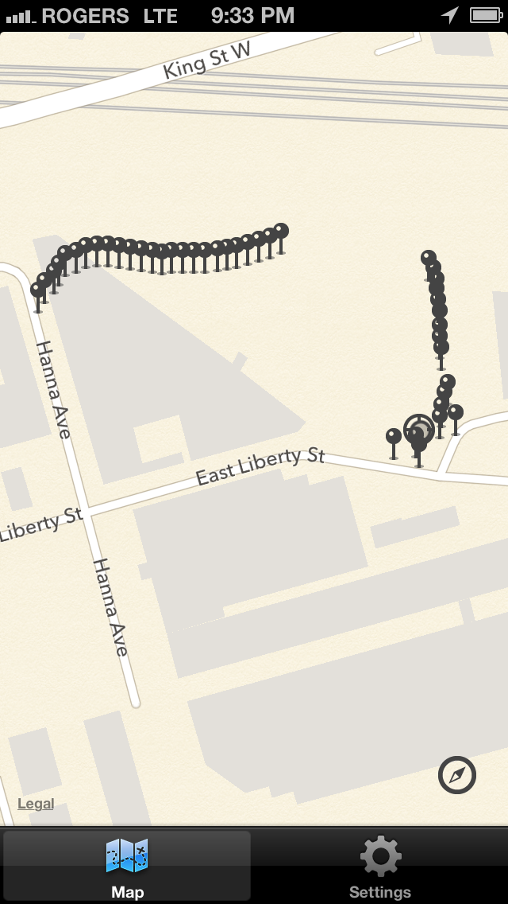
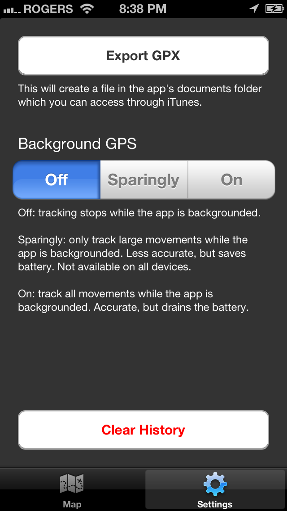

MyTrax
An iPhone/iPad app to track where you've been

With MyTrax you can track where you've been, and then export the data to a GPX file for use in other software. MyTrax supports running in the background so you can do other things while MyTrax is running, and if your device supports it, it will turn off the GPS when not in use to save on battery.
Use MyTrax to:
- track where/how far you've walked
- track where/how far you've hiked
- track where/how far you've ran
- track where you've travelled
Use the exported GPX file to:
- view the track information in other software such as Garmin Basecamp for the Mac
- import into geotagging software and geotag your photos. Useful if you don't have a camera with a gps.

